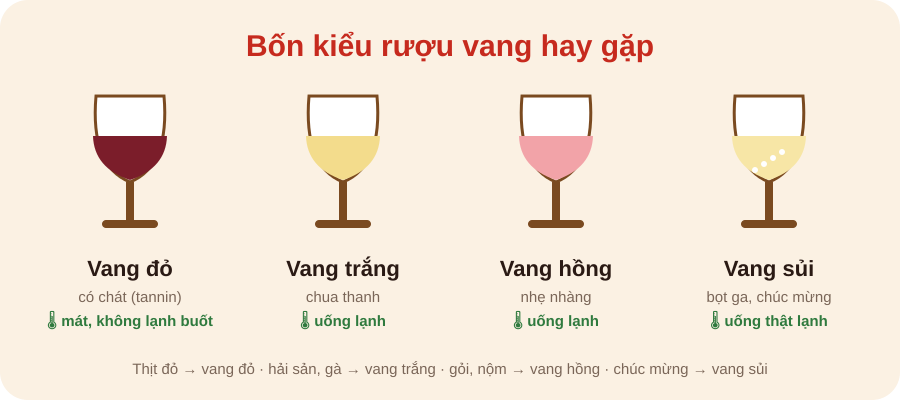

Rượu – bia
Rượu vang nhập môn: đỏ, trắng, hồng, sủi tăm – và chuyện uống lạnh hay để nguyên

Rượu vang thì nhà nào cũng hay gặp vào dịp Tết – chai biếu, chai mừng, chai để mời khách. Nhưng vang đỏ có nên để tủ lạnh không, vang trắng ăn với món gì thì nhiều chị em còn lúng túng. Em đọc thêm cuốn sách về vang, kể lại đây cho các chị em dễ nhớ 😂
Vang là gì?
Rất đơn giản: nước nho lên men. Men ăn đường trong nho sinh ra cồn, thường 12–14% – nhẹ hơn whisky nhiều nhưng vẫn là rượu, vẫn phải uống chừng mực.
Bốn kiểu hay gặp
- Vang đỏ – làm từ nho đỏ, ngâm cả vỏ khi lên men nên có màu và có vị chát (sách gọi là tannin – cái cảm giác khô, se se trong miệng như ăn quả hồng xanh).
- Vang trắng – thường bỏ vỏ, không chát, nổi bật ở độ chua thanh, mùi hoa quả.
- Vang hồng – nho đỏ nhưng chỉ ngâm vỏ ít thời gian, màu hồng nhạt, nhẹ nhàng.
- Vang sủi tăm – có bọt ga tự nhiên, hay dùng để chúc mừng.
Mấy giống nho hay thấy trên nhãn
- Cabernet Sauvignon – vang đỏ đậm, chát rõ.
- Merlot – vang đỏ mềm hơn, dễ uống.
- Pinot Noir – vang đỏ nhẹ, thanh.
- Chardonnay – vang trắng đầy đặn.
- Sauvignon Blanc – vang trắng chua tươi, mùi cỏ, mùi chanh leo.
Uống lạnh hay để nguyên?
- Vang sủi, vang trắng, vang hồng: uống lạnh – để ngăn mát tủ lạnh vài tiếng.
- Vang đỏ: mát chứ không lạnh buốt. Ở xứ nóng như mình, để ngăn mát chừng 15–20 phút trước khi mở là vừa. Lạnh quá thì mất mùi, nóng quá thì nồng cồn.
Đi với món gì?
Em mẹo theo kiểu nhà bếp:
- Thịt đỏ, đồ nướng, đồ kho đậm → vang đỏ.
- Hải sản, cá, gà luộc, đồ chua nhẹ → vang trắng.
- Nộm, gỏi, món nhẹ ngày hè → vang hồng.
- Mâm cỗ, chúc mừng → một ly vang sủi nhỏ.
Còn thịt chưng mắm tép nhà em thì… đi với cơm nóng là chuẩn nhất, khỏi cần vang các bác ạ 😜😜😜
Bảo quản chai đã mở
Đậy nút lại, cất ngăn mát, uống trong vài ngày. Vang để lâu sau khi mở sẽ bị chua dần như giấm.
Vang là cả một thế giới – vùng trồng, năm mùa vụ, cách nếm. Phần sâu hơn em để dành cho nhánh Rượu vang của ứng dụng Thưởng thức rượu bia (sắp mở tại ruoubia.bepcoky.com).
Bài viết để tìm hiểu, không quảng cáo cho loại rượu hay thương hiệu nào. Uống để thưởng thức, đừng để say; đã uống rượu bia thì không lái xe; người dưới 18 tuổi không uống rượu bia.
Em tham khảo: Oz Clarke's Wine Factfinder and Taste Guide (tr. 12, 18, 24 – vị chát, độ chua, giống nho); kiến thức chung về nhiệt độ phục vụ vang.
Kinh nghiệm và kiến thức bếp nhà, em viết lại theo cách hiểu của em – không thay lời khuyên của bác sĩ, chuyên gia dinh dưỡng. Thấy chỗ nào chưa đúng, các bác nhắn em sửa nhé.